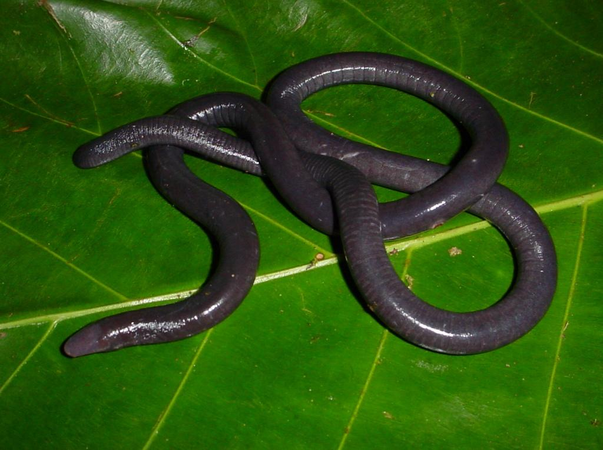

Apodes
Os anfíbios ápodes, também conhecidos como cecílias, pertencem à ordem Gymnophiona. Esses animais são uma das três ordens de anfíbios, junto com os anuros e os caudados. Eles possuem características bastante peculiares e, apesar de serem menos conhecidos, desempenham papéis importantes no equilíbrio dos ecossistemas.
Os anfíbios ápodes são conhecidos por sua ausência de patas, o que lhes dá um corpo alongado, cilíndrico e parecido com o de uma cobra ou de um verme. Essa forma adaptada facilita sua locomoção em ambientes subterrâneos ou aquáticos, onde passam grande parte de suas vidas.
A pele das cecílias é úmida e muitas vezes lisa, com dobras que criam um aspecto segmentado. Algumas espécies possuem pequenas escamas dérmicas, um traço incomum em anfíbios.
Seus olhos são pequenos e pouco desenvolvidos, muitas vezes cobertos por pele ou osso, já que dependem pouco da visão. Em vez disso, possuem um tentáculo sensorial próximo às narinas, que ajuda na detecção de presas e no reconhecimento do ambiente.

Cecília
Aqui podemos ver um exemplo de um anfíbio da classe apoda, a cecília, também conhecida como cobra-cega
As cecílias são encontradas em regiões tropicais da América do Sul, África, Índia e Sudeste Asiático. Elas preferem habitats úmidos, como florestas tropicais, onde o solo é macio e úmido, permitindo que escavem e se escondam. Algumas espécies são totalmente aquáticas, adaptadas a ambientes de água doce.
Os ápodes são carnívoros e se alimentam de pequenos invertebrados, como minhocas, formigas, cupins e outros animais encontrados no solo ou na água.
Algumas espécies são ovíparas, colocando ovos em buracos no solo. Outras são vivíparas, dando à luz filhotes já desenvolvidos. Durante o desenvolvimento, os filhotes podem se alimentar de substâncias produzidas pelo corpo da mãe, como secreções ou partes da pele. Esse comportamento é chamado de dermatofagia.
Também apresentam uma notável importância ecológica no controle de pragas, se alimentando de invertebrados e ajudando a manter o equilíbrio das populações de insetos. Também com a saúde do solo com as suas atividades de escavação contribuirem para a aeração e a mistura do solo.
Há cerca de 200 espécies conhecidas de anfíbios ápodes. Por viverem escondidos, muitas pessoas nunca viram uma cecília ao vivo, o que as torna um dos grupos menos estudados entre os anfíbios. Algumas cecílias podem atingir até 1,5 metro de comprimento, dependendo da espécie.